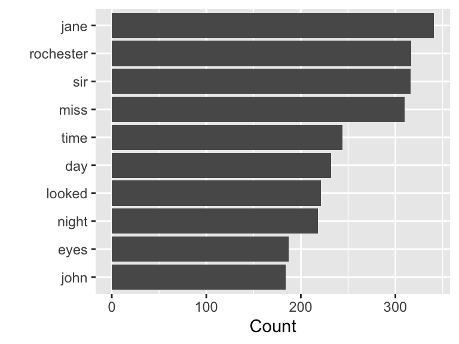
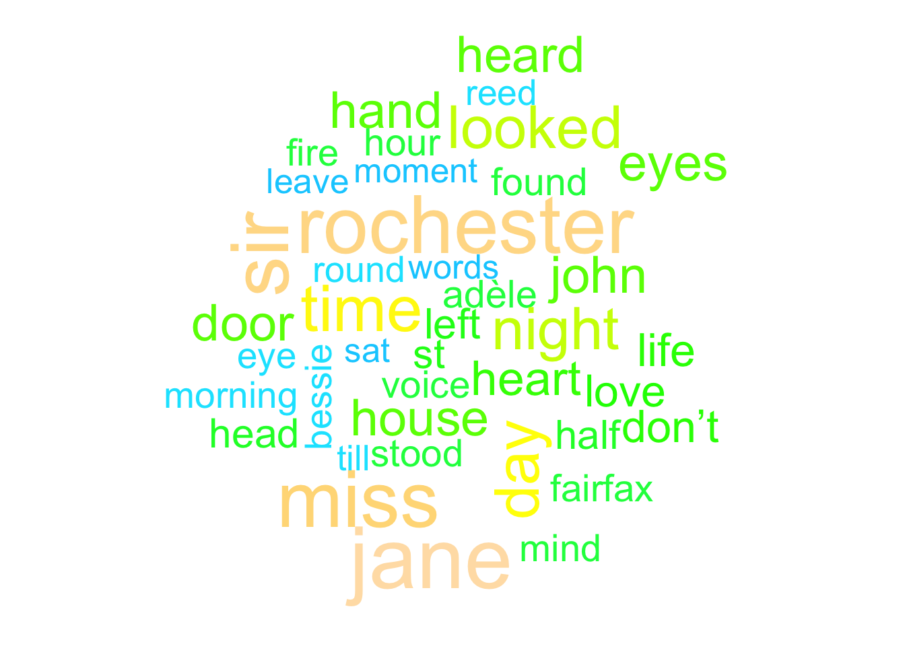

Analysis of Jane Eyre
Loading and cleaning the text data
We can either download the text from Project Gutenberg (see lecture notes), or directly via the text file provided on Moodle
JaneEyre_raw <- readLines( "data/jane_eyre.txt" )
JaneEyre_raw <- data.frame( text = JaneEyre_raw )Let’s split the text into words:
JaneEyre <- JaneEyre_raw %>% unnest_tokens( word, text )nrow(JaneEyre)[1] 188399We have to do some data cleaning. Let’s look at the first 10 words
slice_head( JaneEyre, n=10 ) word
1 jane
2 eyre
3 an
4 autobiography
5 by
6 charlotte
7 brontë
8 _illustrated
9 by
10 fWe remove the underscores from any words, as they are used to indicate words in italics
Word frequency analysis
Calculating term frequency
We now count how often each word appears in the book:
slice_head(JaneEyre_Count, n=10 ) word n
1 the 7856
2 i 7169
3 and 6632
4 to 5238
5 a 4470
6 of 4368
7 you 2970
8 in 2769
9 was 2526
10 it 2406One important measure is term frequency:
slice_head(JaneEyre_Count, n=10) word Count term frequency rank
1 the 7856 0.04169874 1
2 i 7169 0.03805222 2
3 and 6632 0.03520189 3
4 to 5238 0.02780270 4
5 a 4470 0.02372624 5
6 of 4368 0.02318484 6
7 you 2970 0.01576441 7
8 in 2769 0.01469753 8
9 was 2526 0.01340771 9
10 it 2406 0.01277077 10Does Zipf’s Law hold?
Plot rank against term frequency (both on logarithmic scale):
ggplot( JaneEyre_Count, aes( x=rank, y=`term frequency` ) ) +
geom_line( linewidth=1.5 ) +
coord_trans( x="log10", y="log10" )Warning: `coord_trans()` was deprecated in ggplot2 4.0.0.
ℹ Please use `coord_transform()` instead.
We see a linear relationship in the plot, which supports Zipf’s Law that postulates an inverse proportionality between rank and term frequency.
Removing stop words
We use the data set stop_words in the tidytext package:
slice_head(JaneEyre_Count, n=10) word Count term frequency rank
1 jane 341 0.0018099884 69
2 rochester 317 0.0016825992 71
3 sir 316 0.0016772913 72
4 miss 310 0.0016454440 73
5 time 244 0.0012951236 98
6 day 232 0.0012314290 102
7 looked 221 0.0011730423 106
8 night 218 0.0011571187 109
9 eyes 187 0.0009925743 120
10 john 184 0.0009766506 125Visualization
Option 1 Bar plot: we order the words based on frequency

Option 2 Word cloud:
JaneEyre_Count %>%
with( wordcloud( word, Count, max.words=40, colors=topo.colors(n=40) ) )
Sentiment Analysis for Jane Eyre
Start with the raw data and split it into words
JaneEyre <- JaneEyre_raw %>%
mutate( line = row_number() ) %>%
unnest_tokens( word, text ) %>%
mutate( word = gsub( "_", "", word ) )Load the sentiment lexicon
AFINN <- read.csv("data/afinn_sentiment_lexicon.csv" )slice_head(AFINN, n=5) word value
1 abandon -2
2 abandoned -2
3 abandons -2
4 abducted -2
5 abduction -2Only keep the words both in the book and the sentiment lexicon
JaneEyre_AFINN <- inner_join( JaneEyre, AFINN, by="word" )slice_head(JaneEyre_AFINN, n=5) line word value
1 33 demands -1
2 36 thanks 2
3 41 fair 2
4 41 honest 2
5 48 vague -2Sentiment across lines

Sentiment for the individual chapters
Detect which chapter each line belongs to:
JaneEyre_chapters <- JaneEyre_raw %>%
mutate( chapter = cumsum( str_detect(
text, regex("^chapter ", ignore_case = TRUE)
) ) )Remove any text before Chapter 1 and split the text into words:
slice_head(JaneEyre_chapters, n=5) chapter word
1 1 chapter
2 1 i
3 1 there
4 1 was
5 1 noWe can now calculate and visualize the aggregated sentiment for each chapter